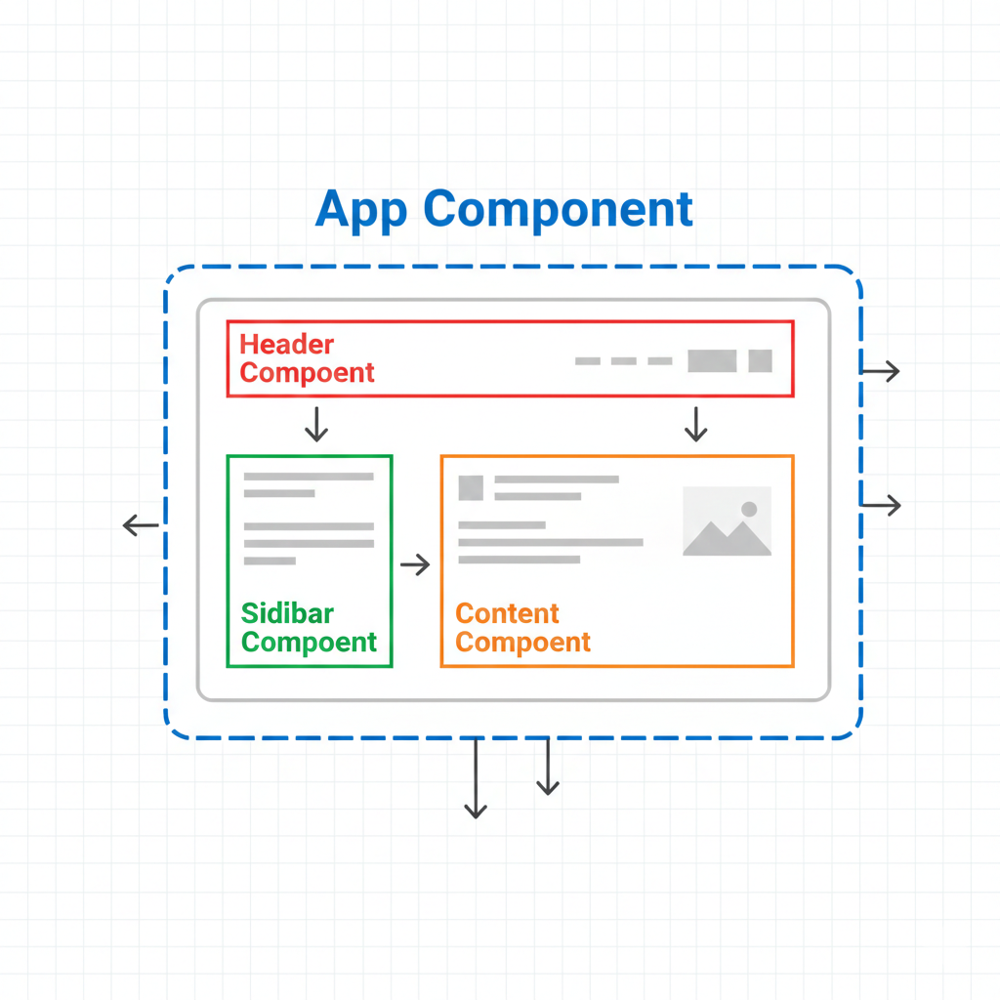
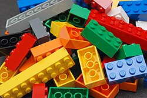

Core React Concepts
Single Page Applications (SPA)
What is the defining characteristic of a Single Page Application (SPA) built with React?
A SPA is a web application that loads a single HTML page and dynamically updates content as the user interacts with it. This provides a faster, more fluid user experience, similar to a desktop or mobile app.
⭐ The Virtual DOM & Reconciliation Process
 Figure: Virtual DOM Snapshot Diffing & Minimal Real DOM Patching
Figure: Virtual DOM Snapshot Diffing & Minimal Real DOM Patching
The Virtual DOM (VDOM) is a lightweight JavaScript representation of the real DOM kept in memory and synced with the "real" DOM by a library such as ReactDOM. This process is called reconciliation.
| Feature | Real Browser DOM | Virtual DOM (React) |
|---|---|---|
| Nature | Actual tree of HTML browser nodes | Lightweight JavaScript Object in memory |
| Manipulation Speed | Slow & expensive (triggers reflow & repaint) | Extremely fast (pure in-memory JS calculation) |
| Update Mechanism | Updates elements and often recalculates surrounding layouts | Batches changes and calculates minimal diff using Diffing Algorithm |
| Memory Cost | High browser memory overhead | Very low memory footprint |
How Reconciliation & Diffing Works
Component state or props change via setState.
React creates a fresh new Virtual DOM tree representing the new UI.
React compares the new VDOM with snapshot of the previous VDOM tree.
Only the exact changed elements are patched into the real browser DOM.
If you have a whiteboard with a list of 20 names and one person changes their phone number, you just erase that single number and write the new one. You don't demolish the whole whiteboard! That is what React's Virtual DOM does: it calculates the exact tiny piece that changed and repaints only that spot in the browser.
How does React's Virtual DOM improve frontend performance compared to direct browser DOM manipulation?
Component-Oriented Architecture
What is the primary architectural benefit of React's component-based design?
React is built around the idea of components. A component is a self-contained, reusable piece of the UI. You build complex UIs by composing simple components together.


JSX, Babel, and Webpack
What does Babel do when it encounters JSX code like `const heading =
Hello MERN
;`?These tools work together to let you write modern React code that can run in any browser.
JSX (JavaScript XML):A syntax extension for JavaScript that lets you write HTML-like code directly in your JavaScript files. It makes creating UI structures intuitive.Babel:A JavaScript compiler that converts modern JavaScript and JSX into older, more compatible JavaScript that all browsers can understand.Webpack:A module bundler. It takes all your JavaScript files, CSS files, and other assets and bundles them into a few optimized files for the browser to download.
React App
Tool: Vite vs. Create React App (CRA)
Why is Vite significantly faster than older tools like Create React App (CRA) during local development?
The tools used to create React applications. While Create React App was the standard for many years, modern tools like Vite offer significant advantages, especially in speed.
| Feature | Create React App (Legacy) | Vite (Modern) |
|---|---|---|
| Setup Command | npx create-react-app my-app |
npm create vite@latest |
| Development Server Speed | Slower (bundles all code first) | Extremely Fast (serves files on demand) |
| Hot Module Replacement (HMR) | Slow | Near-instant |
| Current Status | No longer the recommended choice for new React apps. Tooling is not modern. | Actively developed and recommended by the React community. |
| Pros | - Simple for basic projects | - Incredibly fast development - Modern and efficient - More flexible |
We will use Vite. Its speed and modern approach provide a better learning and development experience, which is why it is the preferred choice for new React projects.
Create a React SPA
1. Environment Setup with Vite
Vite is a modern and extremely fast build tool that has become a popular alternative to Create React App. It provides a much faster development experience.
npm create vite@latestVite will ask you a few questions:
- Project name: › `frontend`
- Select a framework: › `React`
- Select a variant: › `JavaScript`
Then run -
cd frontend
npm install
npm run devTo expose this to our local network (so we can test on our phone), run it with the --host flag:
npm run dev -- --host2. Create Reusable Components
`Header`, `Content` and `Footer`
`src/Header.jsx`
function Header(props) {
return (
<header style={{ backgroundColor: '#0d1117', color: 'white', padding: '1rem' }}>
<h1>{props.title}</h1>
</header>
);
}
export default Header;`src/Content.jsx`
function Content() {
return (
<main style={{ padding: '1rem' }}>
<p>Welcome to MERN stack.</p>
</main>
);
}
`src/Footer.jsx`
function Footer() {
const currentYear = new Date().getFullYear();
return (
<footer style={{ padding: '1rem', borderTop: '1px solid #ccc' }}>
<p>© {currentYear} FinTech Course. All Rights Reserved.</p>
</footer>
);
}
Think of Props (short for Properties) like ordering a customized drink at a cafe:
The customer (Parent Component) says: <CoffeeCup size="Large" milk="Oat" sugar={1} />
The barista (Child Component) receives those custom instructions inside props and serves the exact custom cup! Props allow the same component to look and behave uniquely based on what the parent passes down.
// App.jsx - Complete, runnable React Components & Props Example
import React from 'react';
// Child Component that receives props
function StudentCard({ name, track, score, isHonorRoll }) {
return (
<div style={{
border: '1px solid #ccc',
borderRadius: '8px',
padding: '16px',
margin: '8px',
backgroundColor: isHonorRoll ? '#f0fdf4' : '#fff',
boxShadow: '0 2px 4px rgba(0,0,0,0.05)'
}}>
<h3>{name} {isHonorRoll && '🌟'}</h3>
<p><strong>Track:</strong> {track}</p>
<p><strong>Exam Score:</strong> {score}%</p>
<span style={{
display: 'inline-block',
padding: '4px 8px',
borderRadius: '4px',
backgroundColor: score >= 80 ? '#22c55e' : '#eab308',
color: '#fff',
fontSize: '12px'
}}>
{score >= 80 ? 'Distinction' : 'Passing'}
</span>
</div>
);
}
// Parent App Component
export default function App() {
return (
<div style={{ fontFamily: 'sans-serif', padding: '20px', maxWidth: '600px', margin: 'auto' }}>
<h1>🎓 MERN Student Roster</h1>
<p>Demonstrating component reusability and unidirectional props flow:</p>
{/* Reusing StudentCard with different prop data */}
<StudentCard name="Alice Johnson" track="Full Stack MERN" score={95} isHonorRoll={true} />
<StudentCard name="Bob Smith" track="Backend Node.js" score={82} isHonorRoll={false} />
<StudentCard name="Charlie Brown" track="Frontend React" score={78} isHonorRoll={false} />
</div>
);
}App) passes data to child components (StudentCard) via read-only props (strings, numbers, booleans), which the child destructures and renders into JSX.
- Create a new Vite React app if not already open:
npm create vite@latest my-app -- --template react - Replace the code in
src/App.jsxwith this snippet. - Run in terminal:
npm run dev - Open the local URL (e.g.
http://localhost:5173) in your browser.
Three styled student cards rendered dynamically with custom props and conditional badges.
Which fundamental rule governs how React components handle the `props` they receive from parents?
3. Assemble the App and Pass Props
import './App.css';
import Header from './Header.jsx';
function App() {
return (
<div className="App">
<Header title="MERN Stack for FinTech" />
</div>
);
}
4. Styling the Components
`src/App.css` or `src/index.css`
.App {
text-align: center;
}
main p {
font-size: 1.2rem;
color: #333;
}Import in `App.jsx` or `main.jsx`